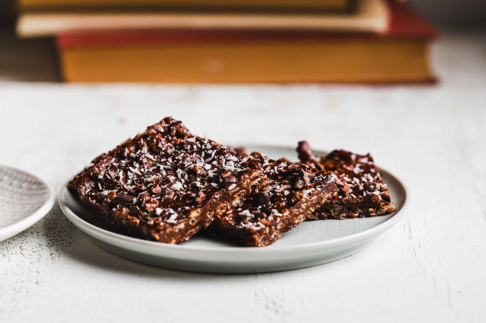
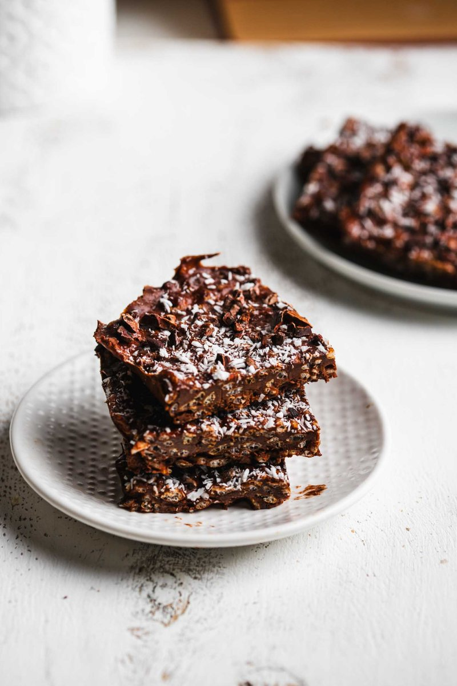

Frozen Chocolate Crunch Bars
Four things, no baking, no refined sugar — ripe banana, almond butter, cocoa, and puffed brown rice, pressed into a pan and frozen into a crunchy chocolate bar.
Skip to recipe ↓
I make these at the bakery all the time — they're one of those things people watch me pull out of the freezer and immediately ask for. And when I tell them what's in it, they don't believe me.
It's four things. No flour, no baking, no refined sugar doing the heavy lifting. The sweetness is slow and clean — it comes from ripe banana, so it's the kind your body actually handles well instead of the spike-and-crash you get from regular sugar. You press it into a pan, let the freezer do the work, and it keeps for a good month in there. That's the whole thing.
The four things
Ripe bananas
The base, most of the sweetness, and part of the glue. Let them go speckled — underripe tastes starchy and won't sweeten the bar. Two is enough.
Almond butter
The fat that sets everything firm once it's cold. Get the natural kind — just almonds — and here's the part people skip: stir the jar all the way down to the bottom first. The oil floats to the top, and if you scoop from there you're building bars out of oil. Mix it back in so what you spoon out is thick and even.
Cocoa powder
All the chocolate, no sugar needed. The banana already carries the sweetness, so the cocoa just brings the depth and color.
Puffed brown rice
The crunch. Grab a gluten-free puffed or crisped brown rice and you're set. Fold it in last and keep it light so you don't crush it.
Frozen Chocolate Crunch Bars

Ingredients
| Ingredient | Amount | Weight | % |
|---|---|---|---|
| Ripe bananas, mashed | 2 bananas | 200g | 49.02% |
| Natural almond butter | ½ cup | 128g | 31.37% |
| Cocoa powder | ½ cup | 45g | 11.03% |
| Puffed brown rice cereal | 2 cups | 35g | 8.58% |
| Total | 408g | 100% |
Optional: a few soft Medjool dates, mashed in for a sweeter, fudgier bar · toppings — shredded coconut, cacao nibs, and a pinch of kosher salt (what I used in the reel).
Instructions
- Line an 8×8 pan with parchment.
- Mash the bananas smooth — any lumps stay lumps.
- Stir your almond butter jar all the way to the bottom so it isn't just the oil on top, then mix ½ cup into the banana until smooth. If you want them sweeter, mash in a few dates here.
- Add the cocoa powder and stir until it's one even color.
- Fold in the puffed brown rice gently — keep it light so you don't crush the crunch.
- Press firmly into the pan and really pack it down. Scatter coconut, cacao nibs, and a pinch of kosher salt on top if using.
- Freeze about 2 hours, until firm. Lift out, slice into 12, and keep them in the freezer.
Why it holds
There's no oven and no binder here — the freezer is doing what the heat usually would. Banana and almond butter both go firm when they're pressed and cold, so packing the mix down hard and freezing it sets it into a solid slab you can slice clean. That's also why the almond butter has to be mixed thick, not oily: the fat is what locks it together.
Notes & swaps
- Dates are optional. The banana sweetens it plenty — but a few mashed Medjools make it sweeter and more fudge-like if that's your thing.
- Toppings are optional too. Coconut, cacao nibs, and kosher salt are what I reached for in the reel. Any of them, all of them, or none.
- No almond butter? Any runny natural nut or seed butter works — peanut, cashew, sunflower. Just mix the jar so it's thick, not oily.
- Keep them frozen and let a bar sit 2–3 minutes before biting. They hold about a month.